Había una vez tres hermanos que viajaban a la hora del crepúsculo por una solitaria y sinuosa carretera.
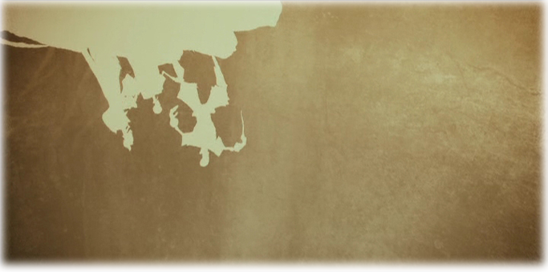
Los hermanos llegaron a un río demasiado profundo para vadearlo y demasiado peligroso para cruzarlo a nado.

Pero como los tres hombres eran muy diestros en las artes mágicas, no tuvieron más que agitar sus varitas e hicieron aparecer un puente para salvar las traicioneras aguas. Cuando se hallaban hacia la mitad del puente, una figura encapuchada les cerró el paso.
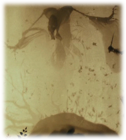Y la Muerte les habló. Estaba contrariada porque acababa de perder a tres posibles víctimas, ya que normalmente los viajeros se ahogaban en el río.
Pero ella fue muy astuta y, fingiendo felicitar a los tres hermanos por sus poderes mágicos, les dijo que cada uno tenía opción a un premio por haber sido lo bastante listo para eludirla.
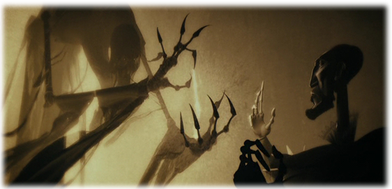
Así pues, el hermano mayor, que era un hombre muy combativo, pidió la varita mágica más poderosa que existiera, una varita capaz de hacerle ganar todos los duelos a su propietario; en definitiva, ¡una varita digna de un mago que había vencido a la Muerte! Ésta se encaminó hacia un saúco que había en la orilla del río, hizo una varita con una rama y se la entregó.
A continuación, el hermano mediano, que era muy arrogante, quiso humillar aún más a la Muerte, y pidió que le concediera el poder de devolver la vida a los muertos. La Muerte sacó una piedra de la orilla del río y se la entregó, diciéndole que la piedra ten-dría el poder de resucitar a los difuntos.
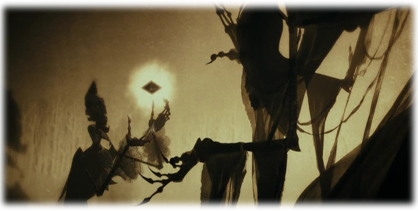
Por último, la Muerte le preguntó al hermano menor qué deseaba.
Éste era el más humilde y también el más sensato de los tres, y no se fiaba un pelo. Así que le pidió algo que le permitiera marcharse de aquel lugar sin que ella pudiera seguirlo. Y la Muerte, de mala gana, le entregó su propia capa invisible.
Entonces la Muerte se apartó y dejó que los tres hermanos siguieran su camino. Y así lo hicieron ellos mientras comentaban, maravillados, la aventura que acababan de vivir y admiraban los regalos que les había dado la Muerte.
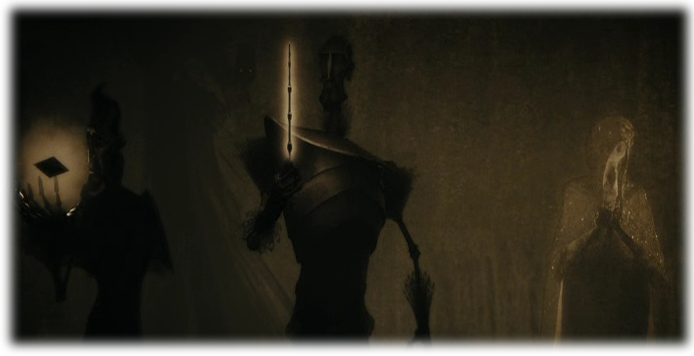
A su debido tiempo, se separaron y cada uno se dirigió hacia su propio destino.
El hermano mayor siguió viajando algo más de una semana, y al llegar a una lejana aldea buscó a un mago con el que mantenía una grave disputa. Naturalmente, armado con la Varita de Saúco, era inevitable que ganara el duelo que se produjo.

Tras matar a su enemigo y dejarlo tendido en el suelo, se dirigió a una posada, donde se jactó por todo lo alto de la poderosa varita mágica que le había arrebatado a la propia Muerte, y de lo invencible que se había vuelto gracias a ella.
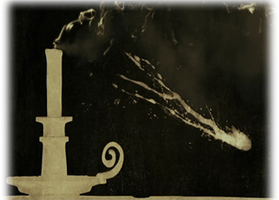Esa misma noche, otro mago se acercó con sigilo mientras el hermano mayor yacía, borracho como una cuba, en su cama, le robó la varita y, por si acaso, le cortó el cuello.
Y así fue como la Muerte se llevó al hermano mayor.
Entretanto, el hermano mediano llegó a su casa, donde vivía solo. Una vez allí, tomó la piedra que tenía el poder de revivir a los muertos y la hizo girar tres veces en la mano.
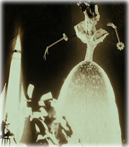
Para su asombro y placer, vio aparecer ante él la figura de la muchacha con quien se habría casado si ella no hubiera muerto prematuramente.
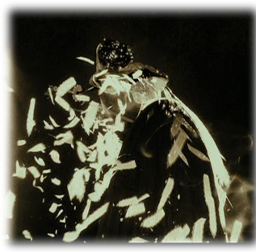
Pero la muchacha estaba triste y distante, separada de él por una especie de velo. Pese a que había regresado al mundo de los mortales, no pertenecía a él y por eso sufría.
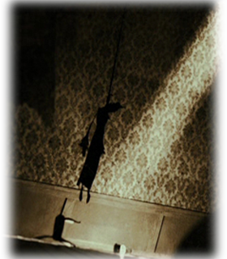
Al fin, el hombre enloqueció a causa de su desesperada nostalgia y se suicidó para reunirse de una vez por todas con su amada.
Y así fue como la Muerte se llevó al hermano mediano.
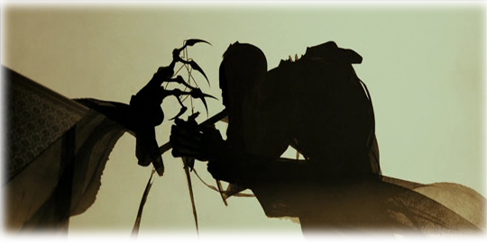
Después buscó al hermano menor durante años, pero nunca logró encontrarlo.
Cuando éste tuvo una edad muy avanzada, se quitó por fin la capa invisible y se la regaló a su hijo.
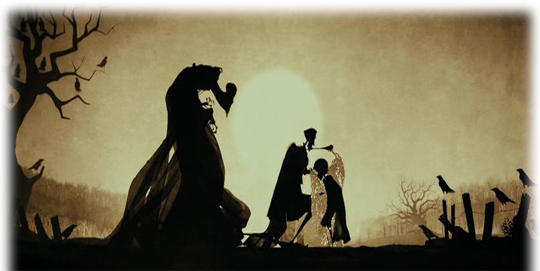
Y entonces recibió a la Muerte como si fuera una vieja amiga, y se marchó con ella de buen grado.
Y así, como iguales, ambos se alejaron de la vida.
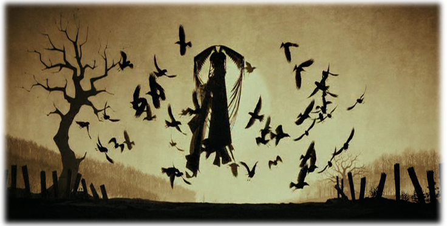